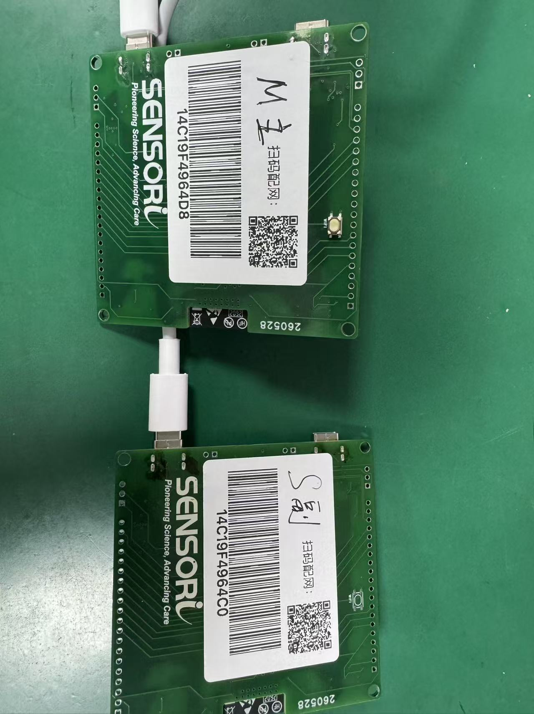
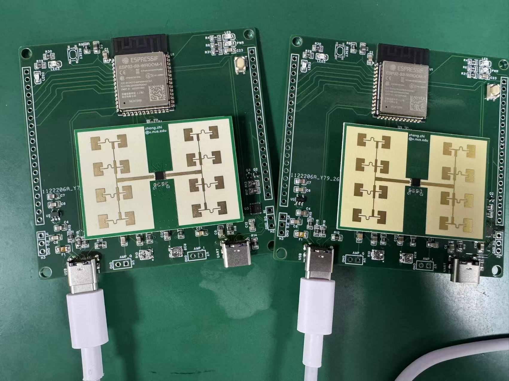
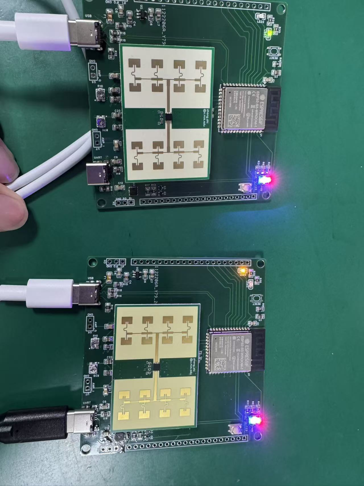
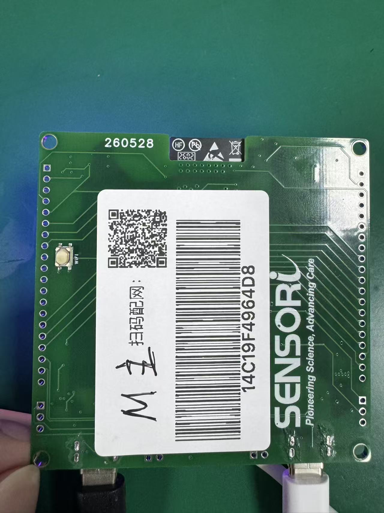

一、主副雷达板介绍
Sensori 主副雷达板是一套基于毫米波雷达的非接触式生命体征检测模块，可实时监测床上人员的呼吸频率、心率，以及在床状态（无人 / 静止 / 运动）。
1. 主副板区分
板子背面的贴纸上标注了"M 主"（主板）和"S 副"（副板），注意区分。

▲ 背面贴纸：左为主板（M 主），右为副板（S 副）
2. 主副板连接
用随附的 C2C（Type-C 对 Type-C）连接线，将主板和副板左下角标有"USB"字样的 Type-C 接口相互连接。

▲ 主副板正面连接示意（左下角 USB 接口对接）
3. 供电
供电线（5V Type-C）插在主板或副板任意一块均可，通电后设备自动运行。

▲ 供电示意图（蓝灯常亮 = 供电正常，红灯慢闪 = Wi-Fi 已连接）
4. 指示灯说明
| 指示灯 | 颜色 | 状态含义 |
|---|---|---|
| 电源指示灯 | 蓝色 | 供电正常时常亮 |
| 网络状态指示灯 | 红色 |
Wi-Fi 已连接：慢闪（约1次/秒） 进入配网模式：快闪 Wi-Fi 连接失败：常灭 |
| MQTT 指示灯 | 淡黄绿色 | 已建立 MQTT 连接时常亮 |
二、配网流程
ℹ️ 配网仅需对主板操作一次，副板无需单独配网。
▲ 配网操作视频教程
0
1
给模块供电
将 5V 电源接入主板或副板任意一个 Type-C 供电口，蓝色电源灯亮起即表示供电正常。
2
进入配网模式（主板）
长按主板背面的 Wi-Fi 配网按键，直到主板红色网络状态指示灯快闪，表明已进入配网模式。
⚠ 同一时间仅让一台设备进入配网模式，避免干扰。

▲ 主板背面：左侧小按钮即为 Wi-Fi 配网键（标注"WIFI"）
3
打开 Sensori Pair 并开始配网
打开手机上的 Sensori Pair App，点击"开始配网"按钮。
4
选择设备
App 会自动扫描并显示附近处于配网模式的设备，选择对应的主板设备。
5
输入设备验证码
当提示输入验证码时，输入：
abcd1234
6
选择 Wi-Fi 并输入密码
从列表中选择宿舍的 Wi-Fi 网络，输入密码后继续。
注：当前仅支持 2.4GHz Wi-Fi 网络。
7
配置 MQTT 服务地址
如视频所示，输入 mqtt://47.116.87.191:1883，然后点击"开始配网"。
8
等待配网完成
✅ 配网成功的标志：
· 红色网络状态指示灯慢闪（1次/秒）→ 已连上 Wi-Fi
· 淡黄绿色 MQTT 指示灯常亮 → 已建立 MQTT 连接
· 红色网络状态指示灯慢闪（1次/秒）→ 已连上 Wi-Fi
· 淡黄绿色 MQTT 指示灯常亮 → 已建立 MQTT 连接
若 Wi-Fi 指示灯常灭，可按主板复位键重启后等待几秒；如仍无法连接，请检查 Wi-Fi 密码或更换网络再试。